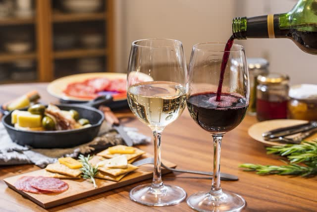

01INGREDIENTS
素材
契約農家から、その日の朝に届く銘柄鶏を使います。一羽を部位ごとに捌き、開店前に串を打つ。鮮度のよい鶏だからこそ、塩だけで旨みが立ちます。

素材の持ち味を大切にし、一本一本丁寧に仕込み、炭火で香ばしく焼き上げる。焼き鳥というシンプルな料理だからこそ、素材・火入れ・塩・タレ、そのすべてにこだわっています。
派手な仕掛けはありません。
毎日同じことを、同じ丁寧さで続けること。
それが、灯火の焼き鳥です。
契約農家から、その日の朝に届く銘柄鶏を使います。一羽を部位ごとに捌き、開店前に串を打つ。鮮度のよい鶏だからこそ、塩だけで旨みが立ちます。
火床には紀州備長炭。強い火と穏やかな火を焼き台の中につくり、部位ごとに置き場所を変えます。皮はぱりっと、身はふっくらと。
粒の大きさの違う数種の塩をブレンド。高い位置から均一に振り、焼き上がりの直前にもうひと振り。塩の角が立たないよう、分量は部位ごとに変えています。
醤油、みりん、鶏ガラ。開店から継ぎ足してきた自家製のタレは、焼いた串をくぐらせるたびに香ばしさが深まります。甘さは控えめに、後味はすっきりと。
焼き鳥は、串を打つ手と、火を見る目で味が決まる料理です。一本目と最後の一本が同じ焼き上がりになるように。カウンター越しに、焼きたてをお渡しします。
こだわりの一本を、お品書きから。